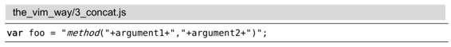
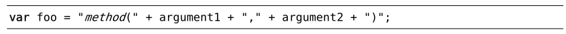
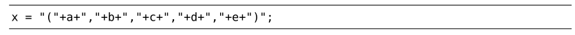
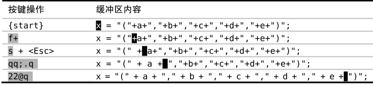

技巧66加次数回放宏
对于重复次数不多的工作，点范式是一种高效的编辑策略，但它不能指定执行的次数。为了克服该限制，我们可以录制一个廉价的、一次性的宏，然后再加次数进行回放。
在技巧3中，我们用点范式处理过这行文本：

现在，我们打算把它变成这个样子：

使用点范式，意味着完成这个任务只需简单地重复执行几次;.命令。但如果在更大范围内遇到这种问题，该怎么办呢？

当然，我们仍然可以使用点范式，但这需要调用那么多次;.命令才能完成任务，工作量似乎也不小。有什么方法能让我们用次数的方式执行呢？
人们很自然地想到11;.应该能完成这项工作，但实际上它不管用。因为Vim会先运行11次;命令，再运行1次.命令。类似地，如果我们运行;11.的话，错误会更明显，因为它会指示Vim先调用1次;，再调用11次.。而我们的真正目的是要运行11次;.。
通过录制一个最简单的宏，我们可以模拟执行11次的;.，即qq;.q。首先，qq将指示Vim录制后续的按键操作并将它们保存至寄存器q中。然后，我们再输入命令;.。最后，我们按下q键结束宏的录制。现在可以加上次数11执行这个宏11@q，即执行11次;.。
让我们归纳一下步骤（参见表11-1）。
;命令会重复f+的查找动作。当光标移到文本行最后一个字符 + 后面时，动作命令;将会执行失败，宏随即中止执行。
表11-1 ——录制宏并加次数回放表

在本例中，我们打算将这个宏执行10次。但如果回放11次的话，最后一次执行将会被中止。换句话说，只要我们用大于或等于10的次数调用该宏就可以完成任务了。
谁愿意坐在那里精确计算一个宏需要被执行多少次呢？反正我不愿意。为了完成该任务，我宁愿估算一个足够大的次数。出于懒惰的缘故，我通常用22这个数字，因为在我的键盘上，字符 @ 与2在同一个键上，容易输入。
注意：不是每个宏都能用估算次数的方法调用。本例之所以可以这样，是因为该宏本身隐含了一种内置的安全捕获机制。如果在当前行找不到下一个 + 号时，;动作命令会失败。更多的细节，请参见当动作命令失败时，宏将中止执行。